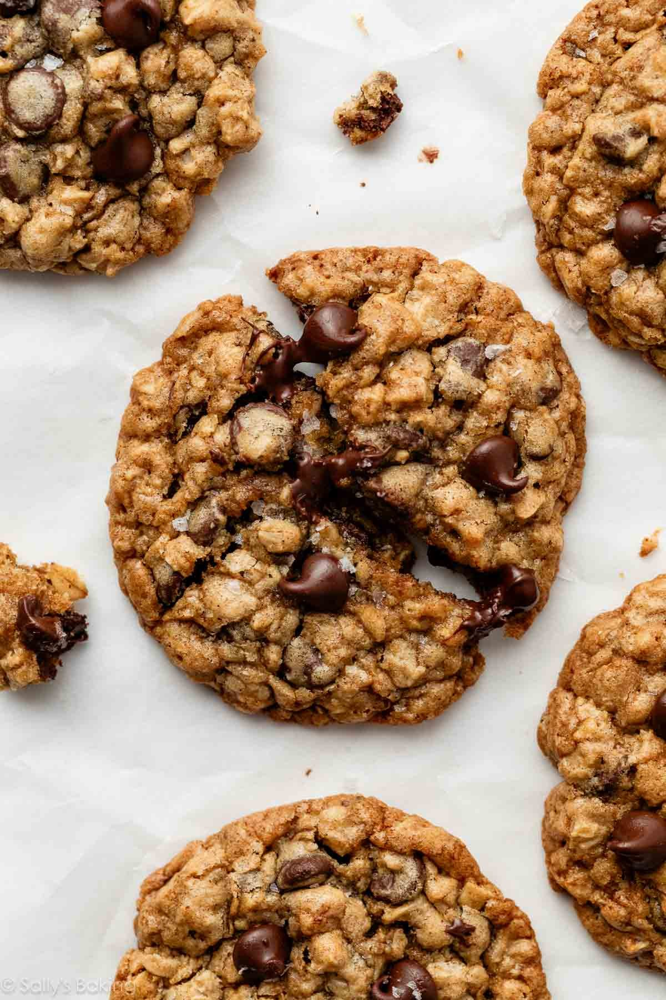

\
Description
These oatmeal chocolate chip cookies are made with oats, butter, and brown sugar and are the softest, chewiest oatmeal cookies to come out of my kitchen. Use this perfect oatmeal cookie as the base for other add-ins such as raisins, dried cranberries, and nuts. Cinnamon and a touch of molasses add that little something extra.
Ingredients
- 1 and 1/2 cups (188g) all-purpose flour (spooned & leveled)
- 1 teaspoon ground cinnamon (optional)
- 1 teaspoon baking soda
- 3/4 teaspoon salt
- 1 cup (16 Tbsp; 226g) unsalted butter, softened to room temperature
- 1 cup (200g) packed light or dark brown sugar
- 1/2 cup (100g) granulated sugar
- 2 large eggs, at room temperature
- 1 Tablespoon (15ml) unsulphured or dark molasses (do not use blackstrap; I prefer Grandma's brand)
- 2 teaspoons pure vanilla extract
- 3 cups (255g) old-fashioned whole rolled oats
- 1 and 3/4 cups (315g) semi-sweet chocolate chips
- optional: flaky sea salt for sprinkling
Steps
- In a medium bowl, whisk the flour, cinnamon, baking soda, and salt together. Set aside.
- In a large bowl using a hand mixer or a stand mixer fitted with a paddle attachment, beat the butter, brown sugar, and granulated sugar together on medium-high speed until combined and creamed, about 3 minutes. Add the eggs, molasses, and vanilla and beat on high speed until combined, about 1 minute. Scrape down the sides and bottom of the bowl and beat again as needed to combine.
- Add the dry ingredients to the wet ingredients and mix on low speed until combined. Beat in the oats and chocolate chips. Dough will be thick and sticky.
- Cover and refrigerate the dough for at least 45 minutes in the refrigerator (and up to 4 days). If chilling for longer than a few hours, allow to sit at room temperature for at least 30 minutes before rolling and baking because the dough will be quite firm.
- Preheat oven to 350°F (177°C). Line baking sheets with parchment paper or silicone baking mats. Set aside.
- Use a medium cookie scoop to scoop the cookie dough, about 2 Tablespoons (40g) of dough per cookie, which is a heaping cookie scoop-ful, and place 3 inches apart on the baking sheets. Bake for 13–14 minutes or until lightly browned on the sides. The centers will look very soft.
- Remove from the oven and allow cookies to cool on the baking sheet for 5 minutes before transferring to a cooling rack to cool completely. While the cookies are still warm, I like to press a few more chocolate chips into the tops and sprinkle with flaky sea salt—both are optional!
- Cookies stay fresh covered at room temperature for up to 1 week.
Home